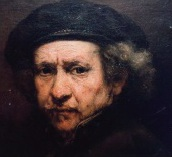

Hollanda ekolünün en önemli sanatçısı Rembrandt van Rijn (1606-1669), mükemmel ve yenilikçi portreleri ile tanınır. Bir Hollanda kasabası olan Leiden’de doğan Rembrandt, Amsterdam’da Pieter Lastman ile çalıştı. Eve döndükten ve senelerce üretken atölye çalışmaları yaptıktan sonra, 1631’de başkente geri taşındı ve yaşamının geri kalanında orada kaldı.

Rembrandt meslek hayatının ilk yıllarında, dönemin en beğenilen tarzı olan dramatik barok tarzında denemeler yaptı. Ancak Peter Paul Rubens (1577-1640) gibi diğer barok ustaları ile rekabet etmeyi başaramadı. Resimleri, İtalyan ve Flaman çağdaşlarınınki kadar ideal değildi. Örneğin, “Samson’un Körlüğü” (1636) resminde kutsal kitapta adı geçen kahramanı öyle yenilmiş ve zavallı bir şekilde tasvir etti ki resim alıcısını memnun etmedi ve iade edildi.
Ancak portre sanatında, özellikle çoklu figürlerde derhal başarı sağladı. “Dr. Tulp’un Anatomi Dersi”nde (1632), örneğin, ortalarındaki uygulanan kesilmeye tepki veren farklı doktorların ifadelerini yakaladı. Cerrahların önceki grup portreleri, resmi bir düzendeki hallerini gösteriyordu. 1642’de Rembrandt, en önemli işini aldı: şehirli milis birliğinin bir grup portresi. “Kaptan Frans Banning Cocq ve Yüzbaşı Willem van Ruytenburch’ın Milis Birliği” resmi, hakiki bir savaştan ziyade bir kutlama törenine hazırlanan bir milis birliğini resmeder. Bu eser çoğunlukla Gece Devriyesi olarak bilinir. Bunun nedeni, bir kat koyu cila üzerine yapılan bu resmin gece sahnesini tasvir ettiği sanılmasıdır. Dört metreden daha geniş olan portre bugün Amsterdam’da Rijksmuseum’da görülebilir.
Rembrandt’ın tarzı, zaman içerisinde önemli ölçüde değişmiştir. İlk zamanlar eserlerinde hâkim olan teatral özellikleri terk ettikçe Rembrandt’ın eserlerindeki duygu temsil git gide daha incelikli ve imalı oldu. Benzer şekilde, altmıştan fazla otoportresi sanatçının gelişimini hem sanatçı olarak, hem de bir birey olarak yansıttı. Erken döneminin kendinin farkında olan pozları ve hoş kıyafetleri, yavaş yavaş yorgun bir asalete ve tecrübeli bir ustanın bilgeliğine yerini bıraktı.
Bir dizi mali krizden sonra Rembrandt, toplumsal alandan biraz kendini çekti. Bununla beraber, toplantıları sanki seyirci tarafından bölünmüş gibi bakan beş kumaş denetçisinin resmedildiği “Kumaş Loncası Temsilcileri” gibi önemli işler almaya devam etti.
Rembrandt, aynı zamanda becerikli bir matbaacıydı. Kağıtlar, mürekkepler ve bakır plakalar kullandığı değişik tekniklerle deneyler yaptı; öyle ki baskılarının çoğu aslında türünün tek örneğiydi.
Rembrandt’ın geniş bir stüdyosu ve onun tarzında çalışan pek çok asistanı olduğu için, pek çok eser ölümünden sonra hatalı şekilde ona atfedilmiştir. 1968’de bir grup Hollandalı sanat tarihçisi, amacı yanlış eserleri ayıklamak olan Rembrandt Araştırma Projesini oluşturdular. Projede, Rembrandt’ın resimlerinden sadece yaklaşık 350’sinin hayatta kaldığı sonucuna varıldı.